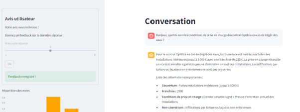
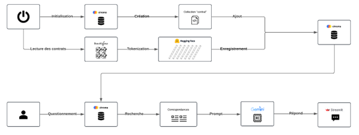

Building a conversational assistant
The goal of this project was to build a chabot assistant that makes the search for information easier across the different contracts that IMA offers to the beneficiaries. It was made accessible through a web app and had to answer IMA employees' questions clearly and accurately by pulling out the relevant information from the contracts.
To build this project, we had to create a RAG (Retrieval-Augmented Generation) system connected to a database containing all the contract information. A RAG system works by answering user questions based on the documents it has access to. To do this, it talks to a database that gives it the documents that match the question being asked by transforming the sentences into mathematical vectors. Then, by using an AI in an indirect way (in our case, Gemini), it sends the AI the context and the relevant documents so it can answer the question. The final answer is then given back to the user.
Extracting the pieces of information from the contracts was done with the Python library BeautifulSoup, which can scrape information from an HTML document. Then, the ChromaDB library gave us access and let us set up a vector database, which makes it easier to search for similar documents. For the interface and the answer-generation part, we used the Genai library, which connects our script to Google's Gemini assistant and lets it generate answers for the user. Streamlit is a Python tool for building web apps, and it let us build a dynamic interface to talk with the assistant.
Skills learned:
- Understanding how vector databases work
- Learning the basics of data tokenization
- Using Python
- Building a dynamic, interactive interface
- Extracting data out of an HTML document
- Split a coding project into multiple script and functions to make it modular
- Understanding how a RAG system works
Illustrations

Overview of the chatbot app

Schema explaining our process to build a RAG